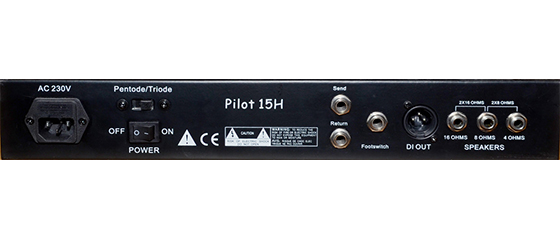
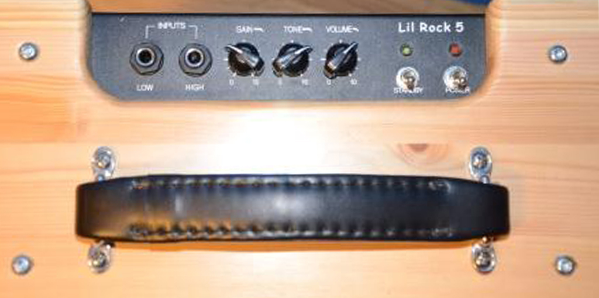
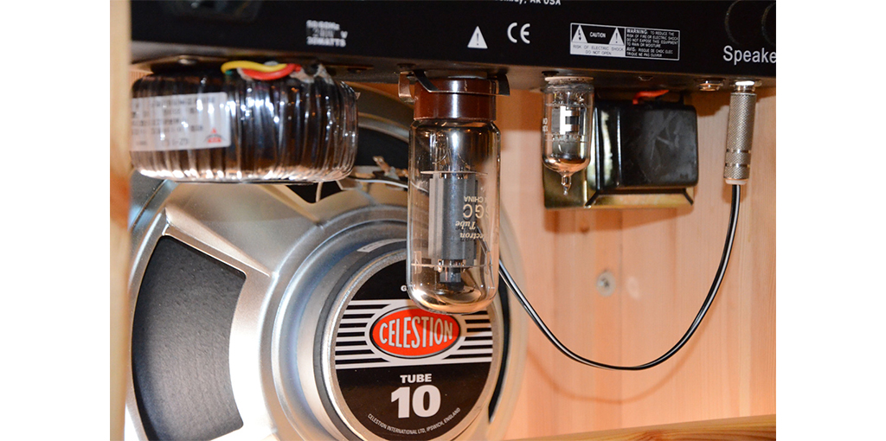

Rörförstärkare
MIACs rörförstärkare är utvecklade av KLD. Kretslösningar bygger på beprövade kopplingar. Kvaliten är mycket bra både på mekaniska komponenter såsom chassie, reverb-eko, rattar, kontakter etc.
Passiva komponenter av bra kvalite: polypropylenkondensatorer för låg drift och brus samt metaloxidresistanser för lågt brus). Förstärkarna erhålls normalt utan kabinett för inbyggnad enligt eget tycke och smak.
Ett antal färdigbyggda modeller i olika träslag finns också. Är du intresserad av en förstärkare så ta gärna kontakt.
Pilot 15H
-

-

- Effekt: 15W rms
- Effektsval: 15/7,5W (pentod/triod)
- Rör: 2st 6L6 /slutsteg) och 2st 12ax7 (försteg)
- Kontroller: Gain, Reverb, Bas, Mellan, Diskant, Mastervolym
- Knappar: Bright/Normal, Reverb on/off samt Boost/Normal
- Eko: Klassiskt fjädereko
- Ingångar: Hi och Lo
- Utgång: 4, 8, 16ohm, XLR-lågnivåutgång
- Effektloop: Send-Retur
- Fotswitch: Eko av/på
- Mått: 385 x 2008 x 165 mm (bredd x djup x höjd)
Pilot 15H har ett fantastisk bra Vintage ljud enligt den Amerikanska skolan. Med sina 2st 6L6-rör i slutsteget ger den ett rent ljud på höga volymer.Perfekt för såväl jazz och blues
2 200:-
Uranus
- Effekt: 15W rms
- Effektval: 5/3W (pentod/triod)
- Rör: 2st 6L6 /slutsteg) och 2st 12ax7 (försteg)
- Kontroller: Gain, Reverb, Bas, Mellan, Diskant, Mastervolym
- Knappar: Bright/Normal, Reverb on/off samt Boost/Normal
- Eko: Klassiskt fjädereko
- Ingångar: Hi och Lo
- Utgång: 4, 8ohm, Hörlursutgång, XLR-lågnivåutgång
- Effektloop: Send-Retur
- Fotswitch: Eko av/på
- Mått: 385x 200 x 165 mm (bredd x djup x höjd)
Uranus är en variant av Pilot med bara ett slutstegsrör. Även denna har ett fantastisk bra Vintige ljud enligt den Amerikanska skolan. Med ett rör i slutsteget börjar distrotionen redan vid lite lägre ljudstyrkor. Perfekt för såväl jazz och blues.
1 700:-
GT15H
- Effekt: 15W rms
- Effektval: 15/7,5W (pentod/triod)
- Rör: 2st EL84 (slutsteg) och 3st 12ax7 (försteg)
- Kontroller: Lead:Gain and Volume, Normal Volume, Reverb,Bas, Mellan, Diskant, Precense, Mastervolym
- Knappar: Normal/Lead, Reverb on/off
- Eko: Klassiskt fjädereko
- Utgång: 4, 8, 16ohm, XLR-lågnivåutgång
- Effektloop: Send-Retur
- Footswitch: Eko av/på
- Mått: 447 x 200 x150 mm (bredd x djup x höjd)
Den EL84 baserade GT15H har en rockigare heavy-metall karaktär med många distmöjligheter.Perfekt för såväl jazz och blues.
2 200:-
GT5
- Effekt: 5W rms, Klass A
- Effektval: 5W/3W (pentode eller triod)
- Rör: 1st 6L6 i slutsteg och 1st 12ax7 i försteg
- Kontroller: Gain, Tone och Volume
- Knappar: On/Off, Standby
- Ingång: High / Low
- Utgång: 4, 8ohm, XLR-lågnivåutgång
- Mått: 340 x 135 x 155 (bredd x djup x höjd)
GT5 är en bra, enkel Rörförstärkare att bygga in i ett Combokabinett. Förvånandsvärt bra ljud från ren ton till crunchy/creamy overdrive!
900:-
Pilot 15H i Bok
- Mått: 42 x 24 x 26 cm (bredd x djup x höjd)
Pilot 15H monterad i ett snygg stilrent träkabinett i bok. Kabinettet är handgjort med snygga sinkade hörn.
3 000:-
GT15 i Furu
- Mått: 48,5 x 24,5 x 22,5 cm (bredd x djup x höjd)
GT15 monterad rustikt furukabinett som kanske passar bra i gillestugan! Kabinettet är handgjort med sinkade hörn.
2 800:-
GT5 Combo "Lil Rock"
-

-

-

- Effekt: 5W
- Högtalare: 10" Celestion G10E-30 Tube
- Mått: 38 x 22 x 39 cm (bredd x djup x höjd)
GT5 förstärkare inbyggd i kabinett av furu tillsammans med en Celestion 10" högtalare. Snygg liten försärkare med bra ljud!
2 000:-